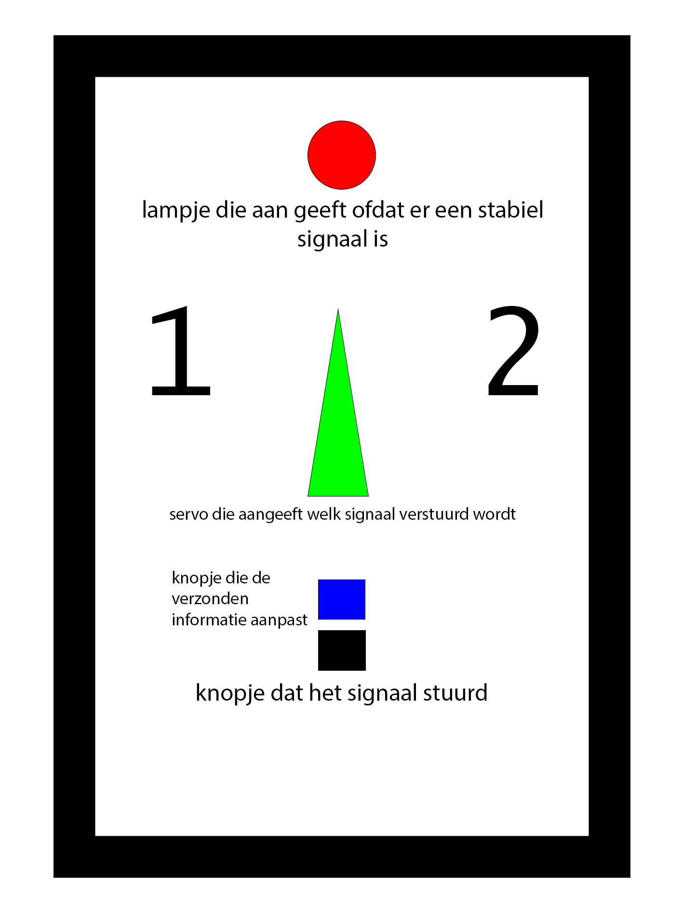

Ik ben een student Creative Media & Game Technologies. Ik ben 18 jaar oud en mijn interesses zijn:
Programmeren
Films maken
Zeilen
Grafisch ontwerpen
Ik werk op dit moment op de pre-analyse van START-Shl, waar ze medisch bloedonderzoek doen. Verder neem ik af
en toe film en design opdrachten aan van verschillende opdrachtgevers waaronder plantenkwekerij J. de Groot en Krachtcirkel Schoonoord. Op dit moment ben ik Javascript,
HTML & CSS aan het leren, dus deze website is een work in progress!
projecten
Ik heb verschillende kunst projecten gehad in de vorm van een film, maar ik ben tegenwoordig bezig met
programmeer projecten. Ik heb een aantal kunstprojecten hieronder gezet, maar ik heb er meer gemaakt die op
mijn YouTube pagina
te vinden zijn.
MIJN
Wanneer Fred door de liefde van zijn leven uit huis wordt gezet, blijft hij haar
achtervolgen in een poging de relatie te redden, met alle gevolgen van dien.
Delfshaven, the place to be
Delfshaven is de plek waar mijn middelbare school stond, voor een kunstproject heb ik samen
met een vriend een sarcastisch filmpje gemaakt over hoe fijne wijk we het vinden.
Duiven Nest
Duiven Nest is een filmpje waarin ik samen met vrienden natuurdocumontaires zoals die van
David Attenborough heb nagemaakt, met als hoofdpersonen de stadsduiven van Rotterdam.
Videoclip Carmen
Carmen is een van de eerste kunst videos die ik ooit gemaakt heb, het gaat over social media
en hoe het ons leven niet per se positief beïnvloed.
Sleutelzoekende Robot
Dit robotje rijdt willekeurig op de grond rond totdat het een metalen object zoals je
sleutels voelt, het produceert dan een luid geluid zodat je weet waar je sleutels liggen
Afstandsbediening (WIP)
Ik ben op het moment bezig om een werkende afstandbedining te maken door middel van infrarood.

vaardigheden
Ik heb veel ervaring met film & fotografie door mijn schooltijd op de Theterhavo/vwo. Hieronder even een
opsomming van de dingen waar ik goed in ben en wat ik duidelijk nog aan het leren ben:
Programma
Ervaring
Adobe Premiere Pro
Adobe After Effects
Adobe Photoshop
Adobe Illustrator
Logic Pro
Javascript
HTML5
CSS
.mcfunction
contact
Als je me wilt bereiken kan dat via een van de volgende dingen: